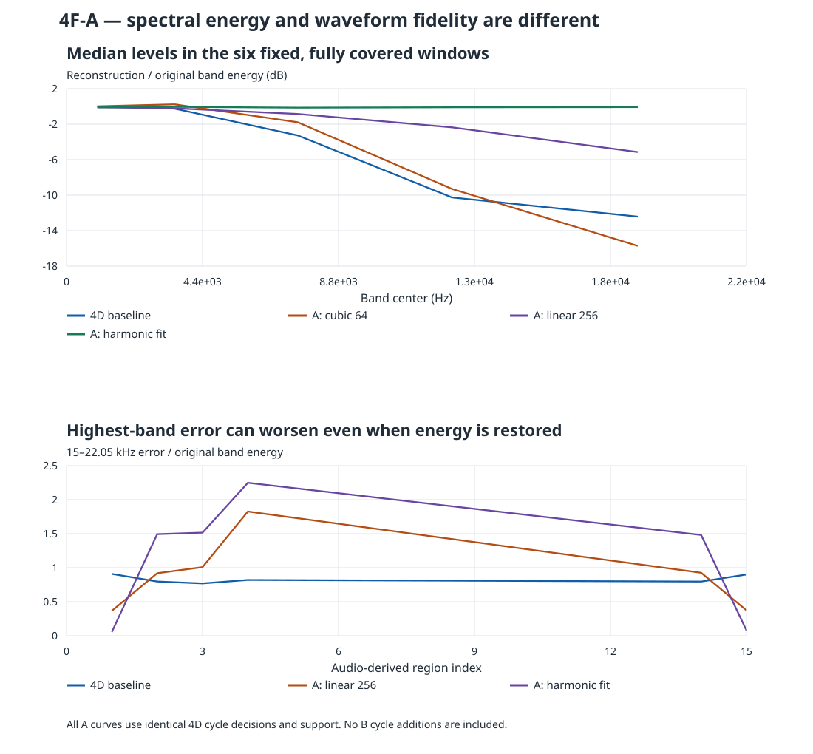
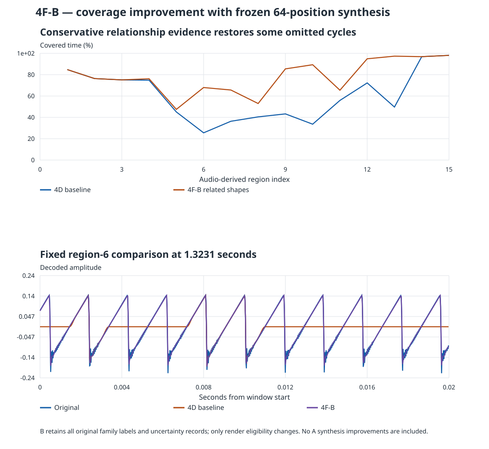

A changes synthesis only. B changes render eligibility only. No combined variant exists. Highest-frequency energy restoration does not guarantee correct phase or waveform.
Full findings · Original reference · Unchanged 4D baseline
Coverage 59.07% · Residual energy 31.41% · Runtime 1.30 s
Coverage 59.07% · Residual energy 31.15% · Runtime 0.93 s
Coverage 59.07% · Residual energy 31.35% · Runtime 6.68 s
Coverage 76.53% · Residual energy 11.10% · Runtime 1.00 s

